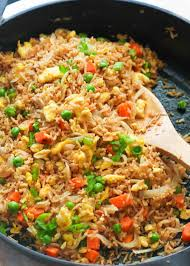

Home
Egg Fried Rice

Description:
Egg Fried Rice is a fast, comforting dish made with day-old rice stir-fried with scrambled eggs, vegetables, and soy sauce. It’s a great way to use up leftovers and can be easily modified by adding your favorite protein or extra veggies. With just a few pantry staples, you can enjoy this tasty and satisfying meal in under 15 minutes.
Time: 15 minutes
Ingredients:
- 2 cups cooked rice (perfectly cold)
- 2 eggs
- 1 cup frozen peas and carrots
- 2 tbsp soy sauce
- 1 tbsp sesame oil or vegetable oil
- 2 green onions, chopped
Instructions:
- Heat oil in a pan. Scramble the eggs and set aside.
- Saute peas and carrots for 2 minutes. Add rice, eggs, and soy sauce.
- Stir-fry until heated through. garnish with gran onions.